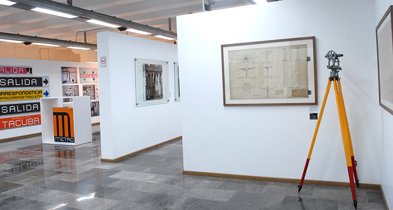
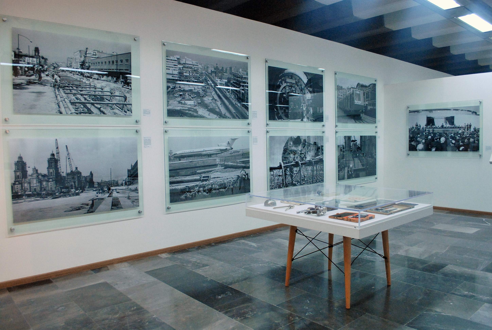
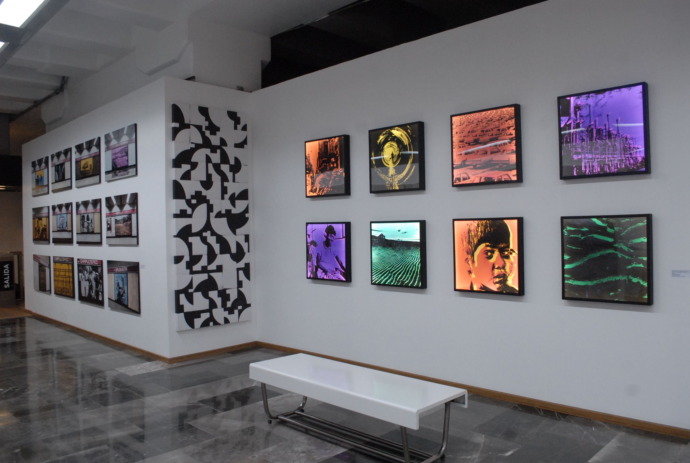
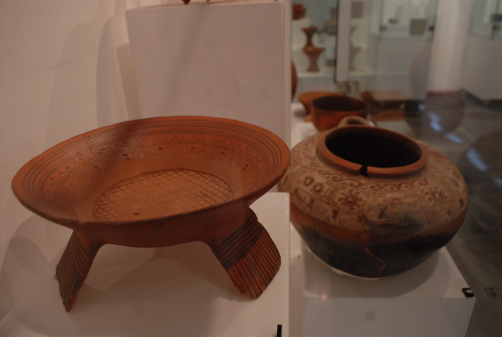
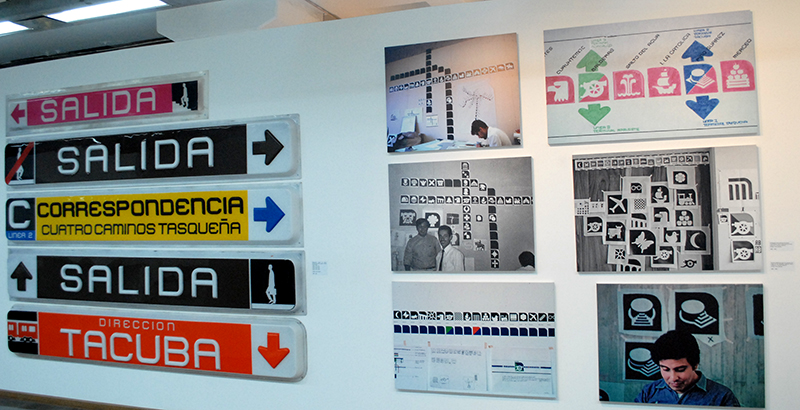

El Museo del Metro muestra planos inéditos, fotografías, objetos arqueológicos y obras de arte relacionadas con el Sistema de Transporte Colectivo.
| Sala | Contenido | Ilustración |
|---|---|---|
| Sala 1 | Presenta una colección de planos inéditos que ilustran el proceso de planeación y construcción de algunas estaciones de la Línea 1. |  |
| Sala 2 | Los visitantes pueden admirar una selección de fotografías provenientes de diversas colecciones, que dan cuenta de las obras de construcción, de la inauguración, pero también de la vida cotidiana del Metro en sus primeros años de funcionamiento. |  |
| Sala 3 | La Cultura va por delante. El STC en colaboración con la Fundación Cultural Pascual, presentan un recorrido por la historia del arte de la segunda mitad del siglo XX en México, a través de las obras de algunos de los más destacados representantes del arte de nuestro país. |  |
| Sala 4 y 5 | Exhibición realizada en colaboración con el Instituto Nacional de Antropología e Historia a través de la Dirección de Salvamento Arqueológico. La muestra “Objetos Cotidianos”, presenta las piezas arqueológicas recuperadas desde las primeras etapas de excavación del STC. |  |
| Sala 6 | La exposición es un recorrido por el proceso creativo de Lance Wyman que dio como resultado los logotipos, tipografía y señalización de las estaciones del Metro, mismas que hoy en día forman parte de la identidad de nuestra ciudad. |  |
| Sala 7 | La historia del Metro se materializa a través de la colección de sus boletos desde 1969 hasta la fecha. | |
Más información en la página oficial.